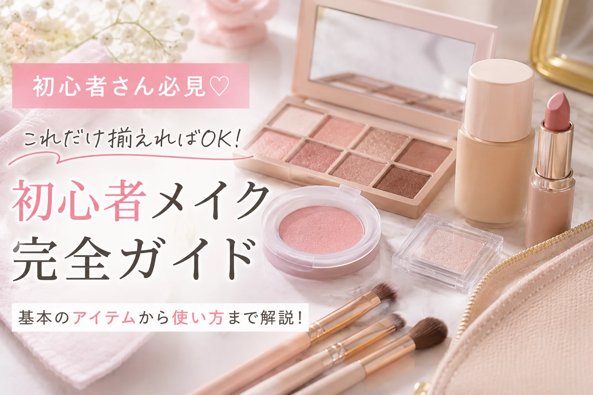
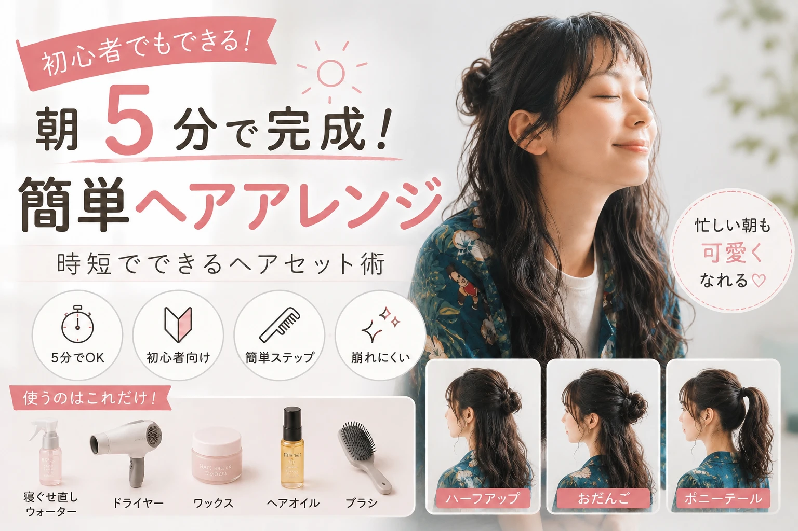

ヘアスタイルで第一印象は大きく変わる
髪型は、顔の印象を左右する大切なポイントです。 どんなにおしゃれな服を着ていても、寝ぐせがついたままだったり、髪がボサボサだったりすると清潔感が損なわれてしまいます。 反対に、朝ほんの5分だけ髪を整える習慣をつけるだけで、第一印象は大きく変わります。 特別なテクニックや高価な道具は必要ありません。 この記事では、初心者でも簡単にできる時短ヘアアレンジや、毎日のヘアケアの基本を詳しく紹介します。
この記事で分かること
- 朝5分でできるヘアセット
- 寝ぐせを素早く直す方法
- 初心者向けワックスの使い方
- ヘアオイル・ヘアミルクの選び方
- 男女別おすすめヘアアレンジ
- 清潔感をアップさせる習慣
ヘアセットに必要な道具
毎朝のセットを楽にするために、まずは基本的な道具を揃えましょう。 どれもドラッグストアで手軽に購入できます。
| アイテム | 用途 |
|---|---|
| ドライヤー | 寝ぐせ直し・髪型を整える |
| ヘアブラシ | 髪をとかす |
| ヘアオイル | ツヤ・まとまりを出す |
| ワックス | 毛流れを作る |
| ヘアスプレー | セットを長持ちさせる |
朝5分でできるヘアセットルーティン
忙しい朝でも、5分あれば清潔感のあるヘアスタイルを作ることができます。 ポイントは「完璧を目指す」のではなく、寝ぐせを直し、髪の流れを整えることです。 毎日同じ流れでセットすると、自然と短時間で仕上げられるようになります。
| 時間 | 内容 |
|---|---|
| 1分 | 寝ぐせを濡らす |
| 2分 | ドライヤーで乾かしながら形を整える |
| 1分 | ヘアオイル・ワックスをつける |
| 1分 | 前髪・後ろ髪を最終チェックする |
① 寝ぐせをしっかり濡らす
寝ぐせは、表面だけを濡らしても直りません。 髪の根元まで水分を含ませることで、クセがリセットされます。 霧吹きを使うと短時間で全体を湿らせることができます。
- 根元からしっかり濡らす
- ぬるま湯がおすすめ
- 濡らし過ぎない
- タオルで軽く水分を取る
② ドライヤーで毛流れを作る
ドライヤーは乾かすだけでなく、髪型を作る道具でもあります。 手ぐしを使いながら、髪を流したい方向へ風を当てることで自然なシルエットになります。
- 根元から乾かす
- 前髪は最後に整える
- 温風→冷風で仕上げる
- 髪を引っ張り過ぎない
③ ヘアオイルでまとまりを出す
乾燥した髪は広がりやすく、パサついて見えます。 ヘアオイルを1〜2滴手に広げ、毛先を中心になじませることで自然なツヤが生まれます。 つけ過ぎるとベタつくため、少量から試しましょう。
④ 前髪を整える
前髪は顔の印象を左右する重要な部分です。 コームやブラシを使って毛流れを整え、必要に応じて軽くワックスを使うと自然な仕上がりになります。
- 前髪を重くし過ぎない
- 目にかからない長さを意識する
- 左右のバランスを確認する
⑤ 最後に鏡で全体を確認する
正面だけでなく、横や後ろも確認しましょう。 寝ぐせやハネが残っていないか、トップがつぶれていないかを見るだけでも完成度が高くなります。 可能ならスマートフォンのインカメラも活用するとチェックしやすくなります。
朝5分ルーティンのポイント
時短のコツ
- 毎日同じ順番でセットする
- 道具は一か所にまとめておく
- ワックスは少量ずつ使う
- 最後に冷風を当てると崩れにくい
初心者向けヘアスタイリング剤の使い方
ヘアセットに慣れていない人は、スタイリング剤を使い過ぎてしまうことがよくあります。 実は、少量を髪全体になじませるだけで自然な毛流れを作ることができます。 まずは自分の髪質に合ったアイテムを選びましょう。
ワックスの基本的な使い方
ワックスは髪型を固定するだけでなく、立体感や動きを作るためのアイテムです。 初心者は「ソフトワックス」や「ナチュラルワックス」から始めるのがおすすめです。
- 指先に10円玉くらい取る
- 両手によく伸ばす
- 後ろ髪から付け始める
- サイド・トップへ広げる
- 最後に前髪を整える
ポイント
- 前髪には付け過ぎない
- 根元より毛先を中心につける
- 足りないと感じたら少しだけ追加する
ヘアオイルとヘアミルクの違い
| 種類 | 特徴 |
|---|---|
| ヘアオイル | ツヤ・まとまり・広がり防止 |
| ヘアミルク | 保湿・乾燥ケア・やわらかい質感 |
| ワックス | 動き・毛流れ・立体感 |
| ヘアスプレー | セットを長時間キープ |
ヘアスプレーの使い方
ヘアスプレーは髪型を崩れにくくするために使います。 髪から20〜30cmほど離し、全体に軽く吹きかけましょう。 近すぎると一部分だけ固まってしまいます。
- 最後の仕上げに使う
- 近づけ過ぎない
- 全体へ均一に吹きかける
- 使い過ぎない
男女別おすすめヘアアレンジ
男性におすすめ
- ナチュラルマッシュ
- センターパート
- アップバング
- ショートレイヤー
- ナチュラルショート
女性におすすめ
- ストレートヘア
- ゆる巻きミディアム
- ポニーテール
- ハーフアップ
- 外ハネボブ
どちらも大切なのは、派手なアレンジではなく「清潔感」です。 髪を整えるだけでも、顔全体が明るく見え、第一印象が大きく変わります。
髪質別ヘアセットのポイント
髪質によって、セットのしやすさやおすすめのスタイリング方法は異なります。 自分の髪質に合った方法を知ることで、毎朝のセットが短時間で決まりやすくなります。
直毛の人
直毛は清潔感が出やすい反面、動きが出にくい特徴があります。 トップに少しボリュームを出し、毛先に軽くワックスをなじませると自然な立体感が生まれます。
- トップを軽く立ち上げる
- ソフトワックスがおすすめ
- 重く見えないようにする
くせ毛の人
くせ毛は無理に真っすぐ伸ばそうとせず、自然な毛流れを活かすとセットしやすくなります。 ヘアオイルやヘアミルクで広がりを抑えるとまとまりやすくなります。
- ドライヤーで毛流れを整える
- ヘアオイルで広がりを防ぐ
- 無理に伸ばし過ぎない
軟毛（柔らかい髪）の人
髪が柔らかい人はボリュームが出にくいため、軽めのワックスやスプレーを使うのがおすすめです。 重いスタイリング剤は髪がつぶれやすくなるので注意しましょう。
剛毛（硬い髪）の人
硬い髪はセットが長持ちしやすい反面、広がりやすい特徴があります。 ヘアオイルでまとまりを出してからワックスを使うと自然に仕上がります。
雨の日・湿気対策
湿気が多い日は、せっかくセットしても髪型が崩れやすくなります。 次のポイントを意識すると、崩れにくいヘアスタイルを保てます。
- 髪を完全に乾かしてから家を出る
- 最後に冷風で仕上げる
- 軽くヘアスプレーを使う
- ヘアオイルを少量使う
梅雨のヘアセット
梅雨は特に湿気が多く、髪が広がりやすくなります。 広がりやすい人はヘアミルクやオイルで保湿し、まとめ髪やショートスタイルもおすすめです。
季節ごとのヘアケア
| 季節 | ポイント |
|---|---|
| 春 | 花粉対策・頭皮を清潔に保つ |
| 夏 | 汗・紫外線対策を意識する |
| 秋 | 乾燥対策を始める |
| 冬 | 保湿ケアをしっかり行う |
やってはいけないヘアセット
- ワックスを付け過ぎる
- 濡れたまま外出する
- ドライヤーを使わない
- 髪を毎日洗わない
- ブラッシングをしない
- 長期間髪を切らない
髪型は第一印象を大きく左右します。 難しいテクニックを覚えるよりも、毎朝5分だけ髪を整える習慣を続けることが、清潔感アップへの一番の近道です。
美容師がおすすめする毎日のヘアケア習慣
きれいなヘアスタイルは、毎日のヘアケアから作られます。 どれだけ上手にセットしても、髪が傷んでいるとツヤがなくなり、まとまりにくくなってしまいます。 毎日の小さな習慣を積み重ねることで、健康的で清潔感のある髪を保つことができます。
① シャンプーは頭皮を洗う意識で
シャンプーは髪ではなく、頭皮を洗うことが目的です。 爪を立てず、指の腹を使って優しくマッサージするように洗いましょう。 洗浄力が強すぎるシャンプーは乾燥の原因になるため、自分の頭皮に合ったものを選ぶことが大切です。
- 38℃前後のぬるま湯で予洗いする
- シャンプーはしっかり泡立てる
- 頭皮を優しく洗う
- 十分にすすぐ
② トリートメントでダメージケア
トリートメントは髪の内部にうるおいを与え、指通りを良くする役割があります。 頭皮ではなく毛先を中心につけ、数分置いてから洗い流すと効果的です。
③ タオルドライを丁寧に行う
髪を強くこすると摩擦によって傷みやすくなります。 タオルで髪を挟み、水分を吸い取るように優しく拭き取りましょう。
④ ドライヤーは必ず使う
自然乾燥は髪や頭皮に負担がかかりやすく、寝ぐせやダメージの原因にもなります。 洗髪後はできるだけ早くドライヤーで乾かしましょう。
ドライヤーのポイント
- 根元から乾かす
- 毛先は最後に乾かす
- 20cmほど離して使う
- 最後は冷風で仕上げる
初心者向けシャンプーの選び方
| 髪質 | おすすめタイプ |
|---|---|
| 乾燥しやすい | 保湿タイプ |
| 脂っぽい | さっぱりタイプ |
| カラー・パーマ | ダメージケアタイプ |
| 敏感肌 | 低刺激タイプ |
よくある質問（FAQ）
Q. 毎日シャンプーした方がいいですか？
基本的には毎日洗うことで頭皮を清潔に保ちやすくなります。 ただし、乾燥しやすい方は洗浄力が穏やかなシャンプーを選ぶとよいでしょう。
Q. ワックスは毎日使っても大丈夫？
問題ありませんが、帰宅後はシャンプーでしっかり洗い流しましょう。 スタイリング剤が頭皮に残るとベタつきやニオイの原因になることがあります。
Q. 美容室にはどれくらいの頻度で行けばいい？
髪型にもよりますが、一般的には1〜2か月に一度を目安に整えると、清潔感のあるスタイルを維持しやすくなります。
Q. ヘアオイルは毎日使った方がいい？
乾燥やパサつきが気になる場合は、毎日少量使うことでツヤやまとまりが出やすくなります。 つけ過ぎには注意しましょう。
まとめ
朝5分のヘアセットでも、毎日続けることで第一印象は大きく変わります。 大切なのは、難しいヘアアレンジではなく「清潔感」と「自然な仕上がり」です。 毎日のヘアケアと基本的なセット方法を習慣化し、自分らしいスタイルを楽しみましょう。
関連記事

おすすめカテゴリー

Pro Pocket Beauty 編集部
初心者向けの美容・メイク・ヘアケア・ファッション情報を分かりやすく発信しています。 毎日の生活に取り入れやすい美容習慣や、プチプラで実践できるテクニックを紹介しています。